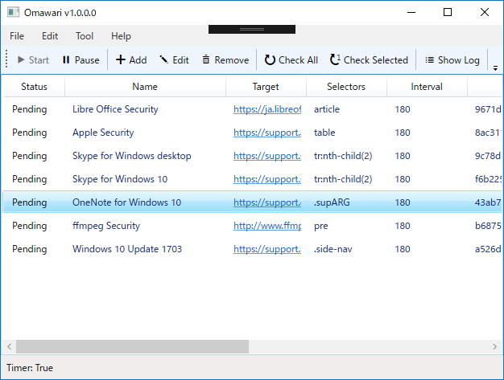
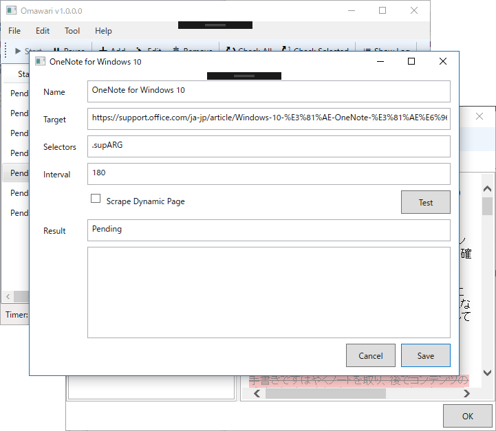

Omawari 1.0.0.0：Web 更新チェッカー的なものを作りました
公開日：

この前作ったスクレイピングサービスを Microsoft Azure Web Apps に載せたのですが……
動かなかったので（そりゃそうか？）、WPF アプリケーションにしました。

ターゲットとなる URI を登録すると、定期的にスクレイピングしてくれます。CSS セレクターが使えるので、ページの一部分だけ保存することが可能です*1。あと、シングルページアプリケーションのために、動的サイトをスクレイピングする機能を追加しました。

ローカルに保存したログは、Diff をとってみることができます*2。データフォルダーをオンラインストレージに指定しておくと（初回利用時に選択できます）、複数環境でデータを同期できて便利かもしれない。
コードが汚いのをなんとかしたいのと、更新を検出したときにデスクトップ通知を出すだけだと見逃しちゃうかもなので、なんかいい方法を考えようかなと思います。